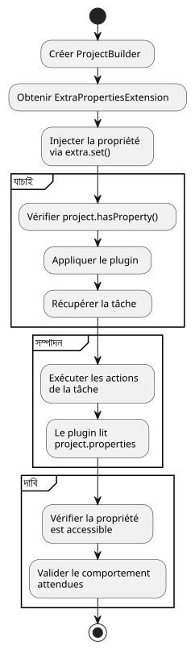

Gradle ইউনিট পরীক্ষার চ্যালেঞ্জ সমাধান করুন `gradle.properties` দিয়ে
Publié le 13 July 2025
প্রব্লেম : গ্রেডল প্লাগইনের ইউনিট টেস্টগুলো আলাদা করা
Gradle প্লাগিনের ইউনিট টেস্ট লিখার সময়, একটি সাধারণ চ্যালেঞ্জ হল প্রকল্প কনফিগারেশনের ডিপেন্ডেন্সি পরিচালনা করা, যেমন ফাইলে সংজ্ঞায়িত বৈশিষ্ট্যগুলো`gradle.properties`. আমাদের কেসে, প্লাগইন`jbake.ghpages`প্রোপার্টি পড়তে হত`site_config_path`ঠিকভাবে কাজ করার জন্য. টাস্কের জন্য ইউনিট টেস্ট`initialize`তাকে এই প্রোপার্টির উপস্থিতিতে প্লাগিনের আচরণ যাচাই করতে হয়েছিল।
মৌলিক সমস্যা হল যে ইউনিট টেস্ট, ডিজাইনে অনুযায়ী, isolés হওয়া উচিত। ব্যাবহারটি`ProjectBuilder`Gradle একটি উদাহরণ তৈরি করে`Project`স্মৃতিতে, ফাইল সিস্টেমে একটি প্রকৃত প্রকল্প থেকে সম্পূর্ণভাবে বিচ্ছিন্ন। ফলে, এই পরীক্ষামূলক উদাহরণ স্বয়ংক্রিয়ভাবে ফাইলটি পড়ে না।gradle.properties`তাই সম্পত্তি সম্পর্কে কোনো জ্ঞান নেই`site_config_path.
সমস্যার আর্কিটেকচার
নিম্নলিখিত নকশাটি পরীক্ষা পরিবেশ ও ফাইল সিস্টেমের মধ্যে বিচ্ছেদকে চিত্রিত করে:
একটি মিথyacচালক ভালো ধারণার আকর্ষণ
একটি প্রথম পদ্ধতি হতে পারে একটি ফাইল তৈরি করা`gradle.properties`পরীক্ষার সম্পদের মধ্যে কৃত্রিম.
// src/test/resources/gradle.properties
site_config_path=src/jbake/settings/site.ymlযদিও এই পদ্ধতি ব্যর্থ হবে, কারণ`ProjectBuilder`এটি কনফিগারেশন ফাইল খুঁজে বের করার জন্য ফাইল সিস্টেম স্ক্যান করার জন্য ডিজাইন করা হয়নি। পরীক্ষা আলাদা থাকবে এবং এই ফাইলটি উপেক্ষা করবে।
সমাধান: প্রপার্টি অনুকরণ করুন ExtraPropertiesExtension দিয়ে
এই সমস্যার শোভন সমাধান হল ফাইলটি পড়া না, বরং অবজেক্টে সেই প্রোপার্টির উপস্থিতি সিমুলেট করা।`Project`টেস্ট।গ্রেডল এই কাজের জন্য একটি শক্তিশালী মেকানিজম প্রদান করে: অতিরিক্ত প্রোপার্টি (Extra Properties).
ধাপ 1: ExtraPropertiesExtension বোঝা
`ExtraPropertiesExtension`এটি Gradle মডেলের প্রতিটি অবজেক্টে সংযুক্ত একটি কী-মান কনটেইনার। এটি একটি প্রকল্প, একটি কাজ, বা অন্য কোনো Gradle এক্সটেনশনে গতিশীলভাবে বৈশিষ্ট্য যোগ করার অনুমতি দেয়।

স্টেপ ২: টেস্টের সেটআপ - প্রস্তুতি
আমরা মৌলিক ইউনিট পরীক্ষা এর কাঠামো তৈরি করতে শুরু করি:
class JbakeGhPagesPluginTest {
@TempDir
lateinit var testProjectDir: File
@Test
fun `check initialize and config yaml file if not existing`() {
// Étape 1 : Créer un projet de test isolé
val project = ProjectBuilder.builder()
.withProjectDir(testProjectDir)
.build()
// Suite des étapes...
}
}ধাপ ৩: সম্পত্তি ইনজেকশন
এখানে পরীক্ষা প্রকল্পে প্রপার্টি ইনজেক্ট করার বিস্তারিত প্রক্রিয়া দেওয়া হল :
@Test
fun `check initialize and config yaml file if not existing`() {
// Étape 1 : Créer un projet de test isolé en mémoire
val project = ProjectBuilder.builder()
.withProjectDir(testProjectDir)
.build()
// Étape 2 : Récupérer le gestionnaire de propriétés supplémentaires
val extra = project.extensions.getByType(ExtraPropertiesExtension::class.java)
// Étape 3 : Définir la propriété requise pour ce test
extra.set("site_config_path", "src/jbake/settings/site.yml")
// Étape 4 : Vérifier que la propriété est bien injectée
assertTrue(project.hasProperty("site_config_path"))
// Étape 5 : Appliquer le plugin qui pourra maintenant accéder à la propriété
project.plugins.apply("jbake.ghpages")
// Étape 6 : Exécuter la tâche et vérifier son comportement
val task: Task = project.tasks.findByName("initialize")
.apply(::assertNotNull)!!
// Étape 7 : Exécuter les actions de la tâche
task.actions.forEach { it.execute(task) }
// Étape 8 : Assertions finales
assertEquals(
"src/jbake/settings/site.yml",
project.properties["site_config_path"],
"La propriété devrait être accessible dans le projet"
)
}ধাপ ৪ : সমাধানERের প্রবাহচিত্র

ধাপ ৫ : আগে/পরে তুলনা
ধাপ ৬ : বহুমুখী পরীক্ষা কেসের ব্যবস্থাপনা
বিভিন্ন পরিস্থিতি পরীক্ষা করতে, বিভিন্ন কনফিগারেশন সহ কিছু পরীক্ষা তৈরি করি :
class JbakeGhPagesPluginTest {
@TempDir
lateinit var testProjectDir: File
private fun createProjectWithProperty(propertyValue: String?): Project {
val project = ProjectBuilder.builder()
.withProjectDir(testProjectDir)
.build()
// Injection conditionnelle de la propriété
propertyValue?.let { value ->
val extra = project.extensions.getByType(ExtraPropertiesExtension::class.java)
extra.set("site_config_path", value)
}
return project
}
@Test
fun `should work with valid property`() {
val project = createProjectWithProperty("src/jbake/settings/site.yml")
project.plugins.apply("jbake.ghpages")
val task = project.tasks.findByName("initialize")!!
task.actions.forEach { it.execute(task) }
// Assertions pour le cas normal
assertEquals("src/jbake/settings/site.yml", project.properties["site_config_path"])
}
@Test
fun `should handle missing property gracefully`() {
val project = createProjectWithProperty(null) // Pas de propriété
project.plugins.apply("jbake.ghpages")
val task = project.tasks.findByName("initialize")!!
// Le plugin devrait gérer l'absence de propriété
assertDoesNotThrow {
task.actions.forEach { it.execute(task) }
}
}
@Test
fun `should handle invalid property path`() {
val project = createProjectWithProperty("invalid/path/to/config.yml")
project.plugins.apply("jbake.ghpages")
val task = project.tasks.findByName("initialize")!!
// Test du comportement avec un chemin invalide
assertThrows<FileNotFoundException> {
task.actions.forEach { it.execute(task) }
}
}
}সমাধানের অंतিম আর্কিটেকচার
এই পদ্ধতির সুবিধাগুলো
-
পূর্ণ আবেক্ষিকতাটেস্টটি কোনো বহির্ভূত ফাইলের উপর নির্ভর করে না। এটি স্বয়ংশাসিত এবং যেকোনো পরিবেশ (স্থানীয়, CI/CD ইত্যাদি) এ বিশ্বস্ততার সাথে চালানো যায়।
-
স্পষ্টতা ও ইচ্ছা: টেস্টটি স্পষ্টভাবে তার প্রয়োগের পূর্বশর্তগুলি ঘোষণা করে। যে কোনো কে টেস্ট পড়ে, সে তৎক্ষণে বোঝে যে প্লাগইনটি সেই প্রপার্টি প্রয়োজন`site_config_path`ফাংশন করার জন্য.
-
বজ্রপাতনশীলতা�যদি প্রপার্টির নাম পরিবর্তিত হয়, তাই পরীক্ষার এক জায়গায় আপডেট করা যথেষ্ট, পরীক্ষা কনফিগারেশন ফাইলগুলো ম্যানিপুলেট করতে হবে না।
-
নমনীয়তা: এই সহজে পরীক্ষা করা যায় যে পরিস্থিতি (ব্যালিড, ইনভ্যালিড, অনুপস্থিত, ইত্যাদি) সম্পর্কে প্রতিটি পরীক্ষায় ইনজেক্টেড সম্পত্তির মান পরিবর্তন করে।
-
কর্মক্ষমতাফাইল পড়া হয় না, সবকিছু মেমোরিতে ঘটে, যা পরীক্ষাগুলোর গতি বাড়ায়।
-
পুনরাবৃত্তি: টেস্টগুলো নির্ধারিত হয় কারণ তারা ফাইল সিস্টেমের অবস্থা উপর নির্ভর করে না।
ভাল অনুশীলন এবং পরামর্শ
একটি ইউটিলিটি পদ্ধতি তৈরি করুন
class GradleTestUtils {
companion object {
fun createProjectWithProperties(
projectDir: File,
properties: Map<String, String>
): Project {
val project = ProjectBuilder.builder()
.withProjectDir(projectDir)
.build()
val extra = project.extensions.getByType(ExtraPropertiesExtension::class.java)
properties.forEach { (key, value) ->
extra.set(key, value)
}
return project
}
}
}প্রপার্টি যাচাই
@Test
fun `should validate property injection`() {
val project = createProjectWithProperty("test-value")
// Vérifications multiples
assertTrue(project.hasProperty("site_config_path"))
assertEquals("test-value", project.property("site_config_path"))
assertNotNull(project.properties["site_config_path"])
// Vérification que la propriété est accessible par le plugin
project.plugins.apply("jbake.ghpages")
// ... reste du test
}উপসংহার
একক পরীক্ষা পরিবেশকে কনফিগারেশন ফাইল পড়তে বাধ্য করার পরিবর্তে, সর্বোত্তম অনুশীলনটি প্রয়োজনীয় অবস্থাটি অনুকরণ করা। এর ব্যবহার`ExtraPropertiesExtension`প্রোগ্রামে Gradle বৈশিষ্ট্য সংজ্ঞায়িত করা হল কার্যকর এবং বিশ্বস্ত প্লাগইন ইউনিট পরীক্ষা সম্পাদনের সবচেয়ে পরিষ্কার এবং সবচেয়ে শক্তিশালী পদ্ধতি।
এই কৌশলটি বাহ্যিক নির্ভরতা সমস্যকে একটি সহজ নির্ভরতা ইনজেকশনে রূপান্তরিত করে, যা টেস্ট-ড্রিভেন ডেভেলপমেন্ট (TDD) দর্শনের মূল। এটি টেস্ট পরিবেশের উপর_complete_ নিয়ন্ত্রণ প্রদান করে, গুণগত ইউনিট পরীক্ষার জন্য প্রয়োজনীয় পৃথকতা বজায় রেখে।
এই নিবন্ধে প্রদর্শিত নকশা এবং উদাহরণগুলি দেখায় যে কীভাবে এই পদ্ধতিটি ক্রমবর্ধমান ও সংগঠিতভাবে বাস্তবায়ন করা যায়, যা আপনার Gradle প্লাগইনের জন্য দৃঢ় এবং রক্ষণযোগ্য পরীক্ষার সেট তৈরি করে।